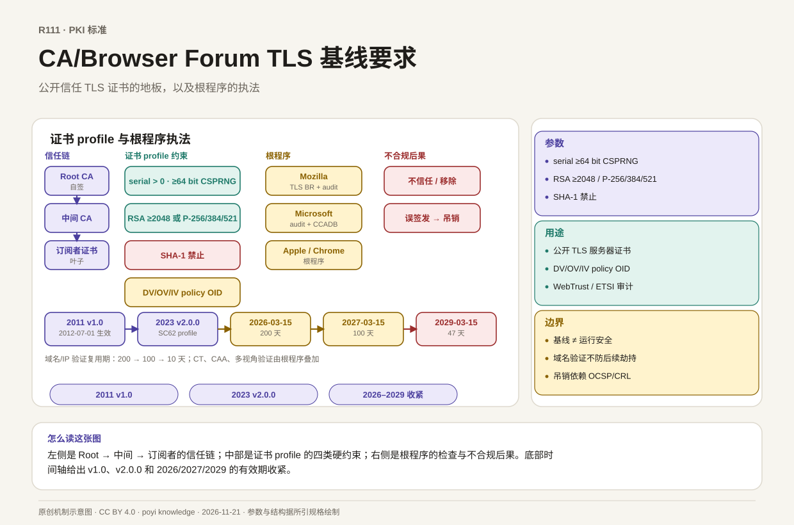
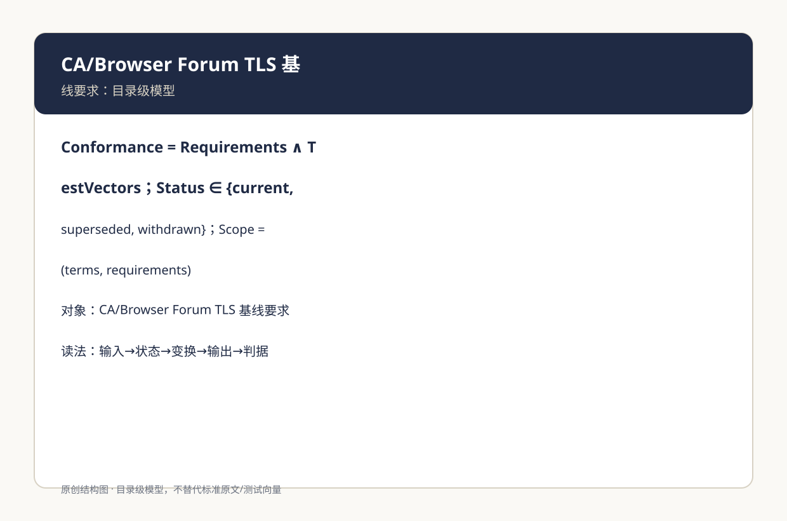

原理与机制
标准：CA/Browser Forum TLS 基线要求（CA/Browser Forum TLS Baseline Requirements）。### 一个“基线 CP”，不是浏览器代码
CA/Browser Forum 是 CA 与浏览器/软件厂商的自愿组织。TLS Baseline Requirements 用 RFC 3647 框架写公开信任 TLS 服务器证书的最低要求：身份验证、域名/IP 控制验证、证书 profile、有效期、审计、吊销与事件响应。它本身不自动强制；只有根程序采纳并写入合同/政策后才生效。### 证书 profile 的硬约束
BR 第 7 节定义证书内容：serial 必须大于 0，且至少含 64 位 CSPRNG 输出；RSA 公钥至少 2048 位，或使用 P-256/P-384/P-521；禁止 SHA-1；终端实体证书必须带 CA/B 保留 policy OID（DV 2.23.140.1.2.1、OV 2.23.140.1.2.2、IV 2.23.140.1.2.3）。这些字段让依赖方判断证书类型和策略。

为什么重要
2011 年以前，各家 CA 的验证、有效期、字段和审计口径不一，导致误签发和浏览器信任差异。统一基线让根程序用同一套审计证据评估所有 CA，也让依赖方有可预测的最低安全线。### 为什么仍然不够
基线是最低要求，不是完整安全证明；CA 被入侵、验证逻辑漏洞、域名劫持仍可能发生。根程序还会叠加自己的要求，例如 CT、CAA、多视角验证和吊销 SLA。
应用与实例
v1.0 于 2011-11-22 通过、2012-07-01 生效；v2.0.0（SC62 证书 profile 重写）于 2023-04-22 通过、2023-09-15 生效。当前 2.3.1（2026-10-04）已排到 2029 的合规日期：2026-03-15 起订阅者证书最长 200 天，2027-03-15 起 100 天，2029-03-15 起 47 天；域名/IP 验证数据复用期同步从 200 天缩到 100 天、再缩到 10 天。### 根程序执行
Mozilla、Microsoft、Apple、Chrome 等根程序要求 CA 符合 TLS BR 并通过 WebTrust/ETSI 审计；严重违规会导致不信任或移除。Microsoft 根计划还要求 DV/OV/EV/IV 的 policy OID、年度审计和 CCADB 披露。

边界与攻击面
BR 管证书签发与 profile，不管 CA 的内部网络、HSM 和人员；这些由 Network and Certificate System Security Requirements 与根程序要求覆盖。CA 泄露私钥或误签发仍可能造成中间人。### 域名验证与吊销
域名控制验证只能证明申请时控制，不能阻止后续劫持；复用期和 CAA 降低风险但不消除。吊销依赖依赖方检查 OCSP/CRL，软失败和延迟仍是现实问题。### 生态争议
有效期缩短、key scope、CT 强制等会增加 CA 和客户的运维成本；小 CA 或私有 PKI 可能被边缘化。BR 是多方投票产物，不是密码学最优解。
历史与背景
CA/Browser Forum 在 2000 年代中期由 CA 与浏览器厂商组成。2011-11-22 通过 v1.0，2012-07-01 生效；2023 年 SC62 把证书 profile 重写为 v2.0.0，2023-09-15 生效。2026 年的 2.3.1 继续缩短有效期和验证复用期。### 命名
“Baseline” 不是“低标准”，而是所有公开信任 TLS 证书必须满足的地板；EV Guidelines 是在此之上叠加的更高身份验证要求。
技术参数与复算边界
该条目的形式模型是 (S=\min_i S_i,\quad S_i\in{\text{密钥强度},\text{分组安全},\text{实现安全}})。输入：输入：CA/Browser Forum TLS 基线要求的公开参数、密钥/随机数与消息；变量说明：S 为综合安全强度；各分量取最小值，不能只看密钥位数。 预期输出：按 CA/Browser Forum TLS 基线要求 的规范执行后得到可验证的输出或可比较的优势界。 复算必须给出输入、步骤、输出和单位；示例只演示流程，不替代标准测试向量。
复杂度由密钥长度、分组/状态规模、轮数、随机数质量和敌手模型共同决定；参数越界、版本差异与实现侧信道都可能使公式结论失效。已登记限制：该条目只给出形式模型与可复算步骤，不声称已完成生产实现、侧信道认证或第三方安全评估。
逐步示例与核验
形式模型与复算步骤
[S=\min_i S_i,\quad S_i\in{\text{密钥强度},\text{分组安全},\text{实现安全}}]
CA/Browser Forum TLS 基线要求的公开参数、密钥/随机数与消息；变量说明：S 为综合安全强度；各分量取最小值，不能只看密钥位数。1.读取标准规定的密钥/分组/模式参数。2.按标准表换算等效强度。3.取最弱分量作为系统强度。边界：公式只覆盖已登记的参数与假设；参数取值、标准版本和实现细节仍以来源为准。
参考出处
- Wikipedia search entry for CA/Browser Forum TLS 基线要求. https://zh.wikipedia.org/w/index.php?search=CA%2FBrowser%20Forum%20TLS%20%E5%9F%BA%E7%BA%BF%E8%A6%81%E6%B1%82
- Handbook of Applied Cryptography (Menezes, van Oorschot, Vanstone). https://www.cacr.math.uwaterloo.ca/hac/